<meta charset=utf-8><style>body{margin:12px;background:#101722;color:white;font:16px system-ui;display:grid;grid-template-columns:repeat(3,1fr);gap:10px}figure{margin:0}img{display:block;width:100%;height:220px;object-fit:contain;background:#080b12}</style><figure>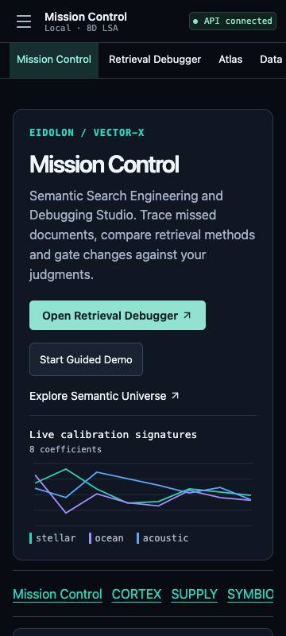<figcaption>mission-control</figcaption></figure><figure>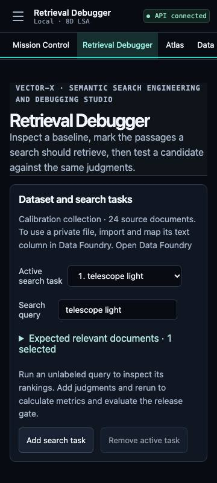<figcaption>retrieval-debugger</figcaption></figure><figure>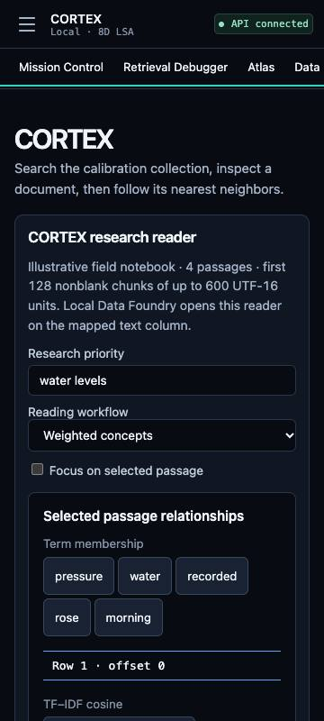<figcaption>cortex</figcaption></figure><figure>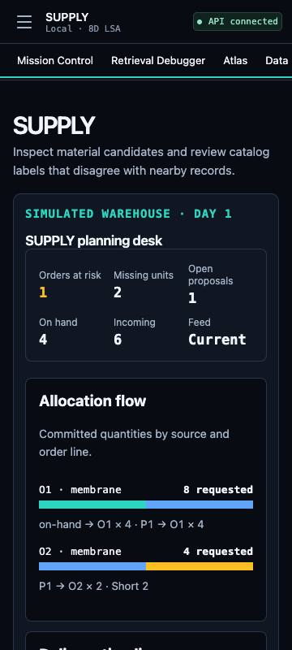<figcaption>supply</figcaption></figure><figure>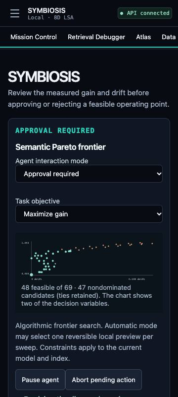<figcaption>symbiosis</figcaption></figure><figure>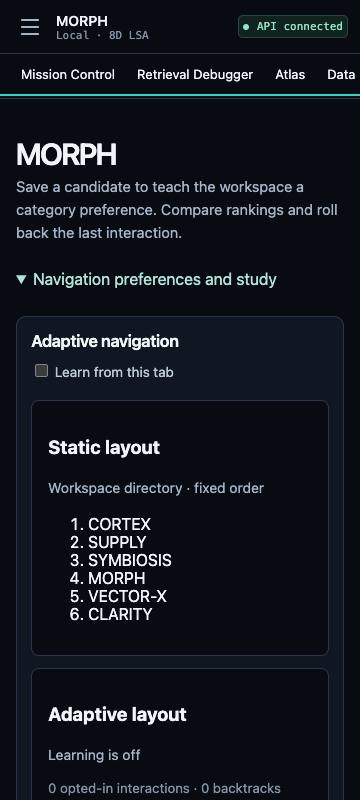<figcaption>morph</figcaption></figure><figure>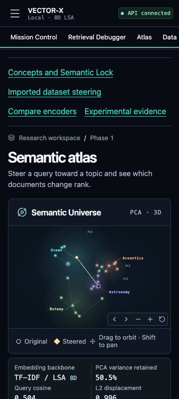<figcaption>vector-x</figcaption></figure><figure>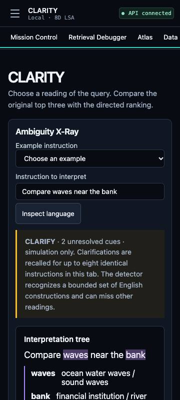<figcaption>clarity</figcaption></figure><figure>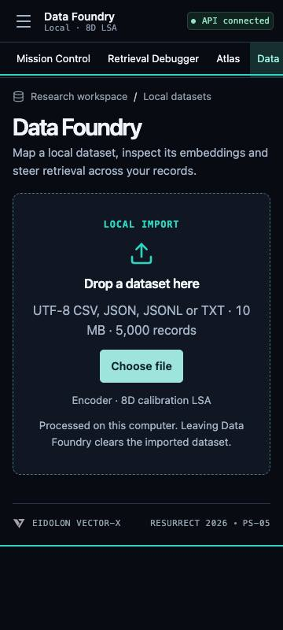<figcaption>data-foundry</figcaption></figure><figure>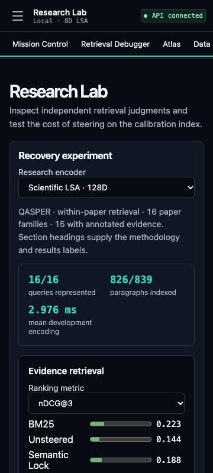<figcaption>research-lab</figcaption></figure><figure>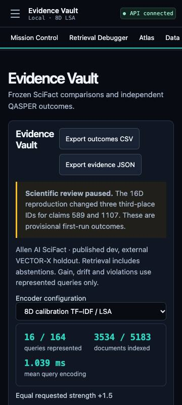<figcaption>evidence-vault</figcaption></figure>